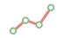
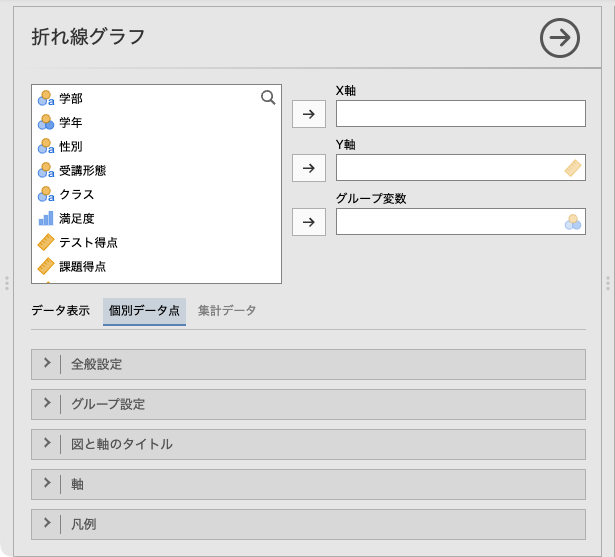
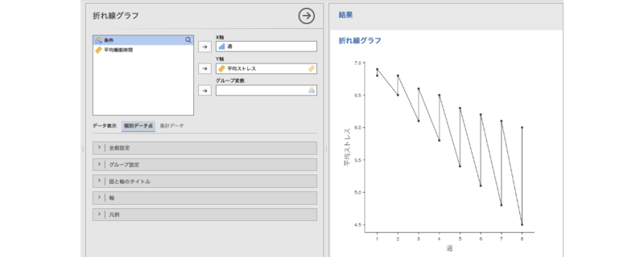
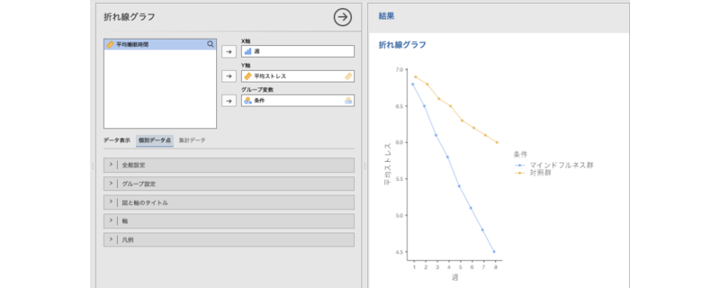

15 折れ線グラフ
折れ線グラフは，時間の経過や順序に沿った値の変化を視覚化するためのグラフです。データ点を線で結ぶことで，増減の傾向や変化のパターンを把握しやすくなります。
jamoviの折れ線グラフツールは，集計済みのデータを用いて作成する場合と，未集計データを用いて作成する場合でメニューの構成が違うので，それぞれ個別に見ていくことにしましょう。
15.1 個別データ点
まずは集計済みデータを用いる場合の方法を見ていきます。このサンプルデータ（chart_line_timeseries.omv）には次の値が入力されています。
週測定週（1〜8）条件介入条件（マインドフルネス群／対照群）平均ストレス週ごとの平均ストレス得点平均睡眠時間週ごとの平均睡眠時間（時間）
これは，マインドフルネスのセッションを行った群とそうでない群の，週ごとのストレス値，および睡眠時間の平均値のデータです。集計済みデータの折れ線グラフ作成機能は，このような時系列データの視覚化に適しています。
折れ線グラフを作成するには，「

折れ線グラフ」を選択します（図 15.1）。すると，次のような設定パネルが表示されます（図 15.2）。

- X軸 X軸に配置する変数を指定します。
- Y軸 Y軸に配置する変数を指定します。
- データ表示 個別データ点をグラフにするか，集計値をグラフにするかを選択します。
 | 全般設定 点のサイズや回帰線の表示など，折れ線グラフの全体的な見た目の設定を行います。
| 全般設定 点のサイズや回帰線の表示など，折れ線グラフの全体的な見た目の設定を行います。- | 図と軸のタイトル 図のタイトルやサブタイトル，軸のタイトル，キャプションの表示方法を設定します。
- | 軸 軸の範囲や軸ラベルの向きなどを設定します。
- | 凡例 凡例（レジェンド）の表示方法や位置を設定します。
ここで，「データ表示」が「個別データ点」になっていることを確認してください。なお，他のグラフと同様に， | 図と軸のタイトル以降の設定項目は「棒グラフ」と同じですので，ここでは説明を省略します。
| 図と軸のタイトル以降の設定項目は「棒グラフ」と同じですので，ここでは説明を省略します。
では，平均ストレスが週ごとの変化を図示してみましょう。「X軸」に「週」変数を，「Y軸」に「平均ストレス」を指定すると，次のような折れ線グラフが表示されます（図 15.3）。

表示されます……が，どこかおかしいですね。これは，この集計データには「マインドフルネス群」と「対照群」の2群の集計値が入力されているからです。複数グループの集計値が入力されているデータでは，「グループ変数」を適切に設定する必要があります。
「グループ変数」に「条件」を指定すると，折れ線グラフが次のようにグループ別に表示されます（図 15.4）。

15.1.1 全般設定
設定パネルの | 全般設定には，次の項目が含まれています。
| 全般設定には，次の項目が含まれています。
- 折れ線
- 線を表示 線を表示させる場合はチェックを入れます。
- 線の太さ 線の太さを設定します（初期値：0.5）。
- 点
- 点を表示 点（マーカー）を表示させる場合はチェックを入れます。
- 点のサイズ 点（マーカー）のサイズを指定します（初期値：2）
- 図の向き
- 軸を入れ替え 縦軸と横軸を入れ替えたい場合はチェックを入れます。
15.1.2 グループ設定
 | グループ設定には，次の項目が含まれています。
| グループ設定には，次の項目が含まれています。
- 線・点スタイル
- 色 グループ間で色を変えたい場合はチェックを入れます。
- 線種 グループ間で線の種類（実線・点線）を変えたい場合はチェックを入れます。
- 点種 グループ間で点（マーカー）のかたちを変えたい場合はチェックを入れます。
- 重なり防止
- ずれ幅 グループ間で点（マーカー）が重ならないよう，横にずらす幅を指定します（初期値：0.5）。
この「重なり防止」の機能は，Excelなどの表計算ソフトのグラフ機能では難しいため，わかりやすいグラフを作成する上で重宝することでしょう。
15.2 集計値
今度は未集計データを用いる場合の方法を見ていきます。サンプルデータ（chart_line_raw.omv）には次の値が入力されています。
ID受講者ID課題タイプ課題タイプ（記憶／注意／推論／言語）指導法指導法（講義／演習）学年群学年群（1-2年／3-4年）得点課題得点（0〜100）
このデータは，課題タイプごとの得点を，指導法と学年群の2種類のグループで比較できる未集計データです。折れ線グラフの「集計値」表示を使うと，このような個票データから平均値などの集計値を自動算出して図示できます。実際のデータ分析では，こちらの機能を使うことが多いでしょう。
グラフタブから「 折れ線グラフ」を選択するところまでは，集計済みデータを用いたグラフ作成の場合と同じです（図 15.5）。